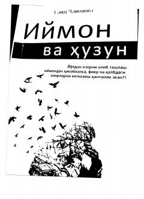

IVTushkunlik va umidsizlikni iymon qalqoni yordamida yengish yo'llari haqida kitob.
Ushbu kitobda inson hayotidagi tushkunlik, umidsizlik, asabiylik va beqarorlik kabi muammolar tahlil qilinib, ularni iymon va sabr orqali yengish yo'llari ko'rsatib beriladi. Muallif hayot sinovlaridan yorug' nazar bilan o'tish va ruhiy xotirjamlikka erishish sirlarini hikmatli tarzda bayon qiladi. Asar turk tilidan Umida Adizova tomonidan tarjima qilingan.